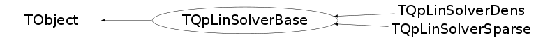

class TQpLinSolverBase: public TObject
TQpLinSolverBase Implementation of main solver for linear systems
Function Members (Methods)
This is an abstract class, constructors will not be documented.
Look at the header to check for available constructors.
public:
| virtual | ~TQpLinSolverBase() |
| void | TObject::AbstractMethod(const char* method) const |
| virtual void | TObject::AppendPad(Option_t* option = "") |
| virtual void | TObject::Browse(TBrowser* b) |
| static TClass* | Class() |
| virtual const char* | TObject::ClassName() const |
| virtual void | TObject::Clear(Option_t* = "") |
| virtual TObject* | TObject::Clone(const char* newname = "") const |
| virtual Int_t | TObject::Compare(const TObject* obj) const |
| virtual void | ComputeDiagonals(TVectorD& dd, TVectorD& omega, TVectorD& t, TVectorD& lambda, TVectorD& u, TVectorD& pi, TVectorD& v, TVectorD& gamma, TVectorD& w, TVectorD& phi) |
| virtual void | TObject::Copy(TObject& object) const |
| virtual void | TObject::Delete(Option_t* option = "")MENU |
| virtual Int_t | TObject::DistancetoPrimitive(Int_t px, Int_t py) |
| virtual void | TObject::Draw(Option_t* option = "") |
| virtual void | TObject::DrawClass() constMENU |
| virtual TObject* | TObject::DrawClone(Option_t* option = "") constMENU |
| virtual void | TObject::Dump() constMENU |
| virtual void | TObject::Error(const char* method, const char* msgfmt) const |
| virtual void | TObject::Execute(const char* method, const char* params, Int_t* error = 0) |
| virtual void | TObject::Execute(TMethod* method, TObjArray* params, Int_t* error = 0) |
| virtual void | TObject::ExecuteEvent(Int_t event, Int_t px, Int_t py) |
| virtual void | Factor(TQpDataBase* prob, TQpVar* vars) |
| virtual void | TObject::Fatal(const char* method, const char* msgfmt) const |
| virtual TObject* | TObject::FindObject(const char* name) const |
| virtual TObject* | TObject::FindObject(const TObject* obj) const |
| virtual Option_t* | TObject::GetDrawOption() const |
| static Long_t | TObject::GetDtorOnly() |
| virtual const char* | TObject::GetIconName() const |
| virtual const char* | TObject::GetName() const |
| virtual char* | TObject::GetObjectInfo(Int_t px, Int_t py) const |
| static Bool_t | TObject::GetObjectStat() |
| virtual Option_t* | TObject::GetOption() const |
| virtual const char* | TObject::GetTitle() const |
| virtual UInt_t | TObject::GetUniqueID() const |
| virtual Bool_t | TObject::HandleTimer(TTimer* timer) |
| virtual ULong_t | TObject::Hash() const |
| virtual void | TObject::Info(const char* method, const char* msgfmt) const |
| virtual Bool_t | TObject::InheritsFrom(const char* classname) const |
| virtual Bool_t | TObject::InheritsFrom(const TClass* cl) const |
| virtual void | TObject::Inspect() constMENU |
| void | TObject::InvertBit(UInt_t f) |
| virtual TClass* | IsA() const |
| virtual Bool_t | TObject::IsEqual(const TObject* obj) const |
| virtual Bool_t | TObject::IsFolder() const |
| Bool_t | TObject::IsOnHeap() const |
| virtual Bool_t | TObject::IsSortable() const |
| Bool_t | TObject::IsZombie() const |
| virtual void | JoinRHS(TVectorD& rhs, TVectorD& rhs1, TVectorD& rhs2, TVectorD& rhs3) |
| virtual void | TObject::ls(Option_t* option = "") const |
| void | TObject::MayNotUse(const char* method) const |
| virtual Bool_t | TObject::Notify() |
| void | TObject::Obsolete(const char* method, const char* asOfVers, const char* removedFromVers) const |
| static void | TObject::operator delete(void* ptr) |
| static void | TObject::operator delete(void* ptr, void* vp) |
| static void | TObject::operator delete[](void* ptr) |
| static void | TObject::operator delete[](void* ptr, void* vp) |
| void* | TObject::operator new(size_t sz) |
| void* | TObject::operator new(size_t sz, void* vp) |
| void* | TObject::operator new[](size_t sz) |
| void* | TObject::operator new[](size_t sz, void* vp) |
| TQpLinSolverBase& | operator=(const TQpLinSolverBase& source) |
| virtual void | TObject::Paint(Option_t* option = "") |
| virtual void | TObject::Pop() |
| virtual void | TObject::Print(Option_t* option = "") const |
| virtual void | PutXDiagonal(TVectorD& xdiag) |
| virtual void | PutZDiagonal(TVectorD& zdiag) |
| virtual Int_t | TObject::Read(const char* name) |
| virtual void | TObject::RecursiveRemove(TObject* obj) |
| void | TObject::ResetBit(UInt_t f) |
| virtual void | TObject::SaveAs(const char* filename = "", Option_t* option = "") constMENU |
| virtual void | TObject::SavePrimitive(ostream& out, Option_t* option = "") |
| virtual void | SeparateVars(TVectorD& vars1, TVectorD& vars2, TVectorD& vars3, TVectorD& vars) |
| void | TObject::SetBit(UInt_t f) |
| void | TObject::SetBit(UInt_t f, Bool_t set) |
| virtual void | TObject::SetDrawOption(Option_t* option = "")MENU |
| static void | TObject::SetDtorOnly(void* obj) |
| static void | TObject::SetObjectStat(Bool_t stat) |
| virtual void | TObject::SetUniqueID(UInt_t uid) |
| virtual void | ShowMembers(TMemberInspector& insp) |
| virtual void | Solve(TQpDataBase* prob, TQpVar* vars, TQpResidual* resids, TQpVar* step) |
| virtual void | SolveCompressed(TVectorD& rhs) |
| virtual void | SolveXYZS(TVectorD& stepx, TVectorD& stepy, TVectorD& stepz, TVectorD& steps, TVectorD& ztemp, TQpDataBase* data) |
| virtual void | Streamer(TBuffer& b) |
| void | StreamerNVirtual(TBuffer& b) |
| virtual void | TObject::SysError(const char* method, const char* msgfmt) const |
| Bool_t | TObject::TestBit(UInt_t f) const |
| Int_t | TObject::TestBits(UInt_t f) const |
| virtual void | TObject::UseCurrentStyle() |
| virtual void | TObject::Warning(const char* method, const char* msgfmt) const |
| virtual Int_t | TObject::Write(const char* name = 0, Int_t option = 0, Int_t bufsize = 0) |
| virtual Int_t | TObject::Write(const char* name = 0, Int_t option = 0, Int_t bufsize = 0) const |
protected:
| virtual void | TObject::DoError(int level, const char* location, const char* fmt, va_list va) const |
| void | TObject::MakeZombie() |
Data Members
public:
| enum TObject::EStatusBits { | kCanDelete | |
| kMustCleanup | ||
| kObjInCanvas | ||
| kIsReferenced | ||
| kHasUUID | ||
| kCannotPick | ||
| kNoContextMenu | ||
| kInvalidObject | ||
| }; | ||
| enum TObject::[unnamed] { | kIsOnHeap | |
| kNotDeleted | ||
| kZombie | ||
| kBitMask | ||
| kSingleKey | ||
| kOverwrite | ||
| kWriteDelete | ||
| }; |
protected:
| TVectorD | fCloIndex | |
| TVectorD | fCupIndex | |
| TVectorD | fDd | temporary storage vectors |
| TVectorD | fDq | |
| TQpProbBase* | fFactory | |
| Int_t | fMclo | |
| Int_t | fMcup | |
| Int_t | fMy | |
| Int_t | fMz | |
| TVectorD | fNomegaInv | stores a critical diagonal matrix as a vector |
| Int_t | fNx | dimensions of the vectors in the general QP formulation |
| Int_t | fNxlo | |
| Int_t | fNxup | dimensions of the upper and lower bound vectors |
| TVectorD | fRhs | right-hand side of the system |
| TVectorD | fXloIndex | |
| TVectorD | fXupIndex | index matrices for the upper and lower bounds on x and Cx |
Class Charts
{kind=link}
{kind=link}
{kind=link}
{kind=link}

Function documentation
void Factor(TQpDataBase* prob, TQpVar* vars)
Sets up the matrix for the main linear system in "augmented system" form. The
actual factorization is performed by a routine specific to either the sparse
or dense case
void ComputeDiagonals(TVectorD& dd, TVectorD& omega, TVectorD& t, TVectorD& lambda, TVectorD& u, TVectorD& pi, TVectorD& v, TVectorD& gamma, TVectorD& w, TVectorD& phi)
Computes the diagonal matrices in the augmented system from the current set of variables
void Solve(TQpDataBase* prob, TQpVar* vars, TQpResidual* resids, TQpVar* step)
Solves the system for a given set of residuals. Assembles the right-hand side appropriate to the matrix factored in factor, solves the system using the factorization produced there, partitions the solution vector into step components, then recovers the step components eliminated during the block elimination that produced the augmented system form .
void SolveXYZS(TVectorD& stepx, TVectorD& stepy, TVectorD& stepz, TVectorD& steps, TVectorD& ztemp, TQpDataBase* data)
Assemble right-hand side of augmented system and call SolveCompressed to solve it
void JoinRHS(TVectorD& rhs, TVectorD& rhs1, TVectorD& rhs2, TVectorD& rhs3)
Assembles a single vector object from three given vectors .
rhs_out (output) final joined vector
rhs1_in (input) first part of rhs
rhs2_in (input) middle part of rhs
rhs3_in (input) last part of rhs .
void SeparateVars(TVectorD& vars1, TVectorD& vars2, TVectorD& vars3, TVectorD& vars)
Extracts three component vectors from a given aggregated vector.
vars_in (input) aggregated vector
x_in (output) first part of vars
y_in (output) middle part of vars
z_in (output) last part of vars
void SolveCompressed(TVectorD& rhs)
assemble right-hand side of augmented system and call SolveCompressed to solve it
void PutXDiagonal(TVectorD& xdiag)
perform the actual solve using the factors produced in factor. rhs on input contains the aggregated right-hand side of the augmented system; on output contains the solution in aggregated form
void PutZDiagonal(TVectorD& zdiag)
places the diagonal resulting from the bounds on x into the augmented system matrix